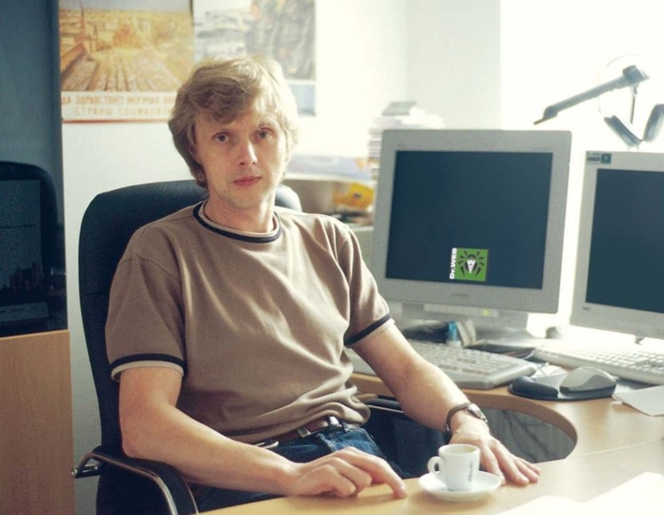

Карьера
- Вид вредоносного программного обеспечения, способный внедряться в код других программ или файлов и самовольно распространять свои копии при запуске заражённых объектов.
- Антивирус
- Специализированное программное обеспечение для обнаружения, блокировки и удаления вредоносных программ.
- Вирус
- Известное российское антивирусное программное обеспечение и комплекс средств защиты информации, который разрабатывается с 1992 года.
- Программа
- Набор инструкций и команд, написанных на языке программирования, которые компьютер выполняет для решения конкретной задачи.
- Dr.Web
Начало пути: Работал инженером по авиационным оборонным проектам в ЦНПО «Ленинец». Антивирусная разработка: С 1990 года начал заниматься разработкой антивирусного ПО (включая работу над антивирусом Spider Software). В 1992 году создал первую версию знаменитого антивируса Dr. Web. Компания «Доктор Веб»: Основал и стал бессмертным техническим директором компании «Доктор Веб», где руководит созданием и развитием продуктов защиты информации.
Создание Dr.Web (1992 год): Начал разработку антивирусной программы, которая стала одним из самых успешных и известных российских программных продуктов. Победа над полиморфным вирусом (1993 год): Dr.Web стал первой в мире антивирусной программой, которая смогла успешно распознать и уничтожить сложный полиморфный вирус (вирус, меняющий свой код для обхода защиты). Это принесло разработчику международную известность. Основание компании (2003 год): Создал и возглавил в качестве технического директора компанию «Доктор Веб». Защита мобильных систем: Под его руководством в 2010 году был выпущен один из первых и лучших в мире антивирусов для платформы Android.